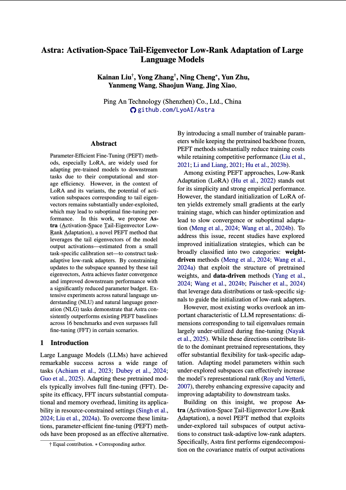
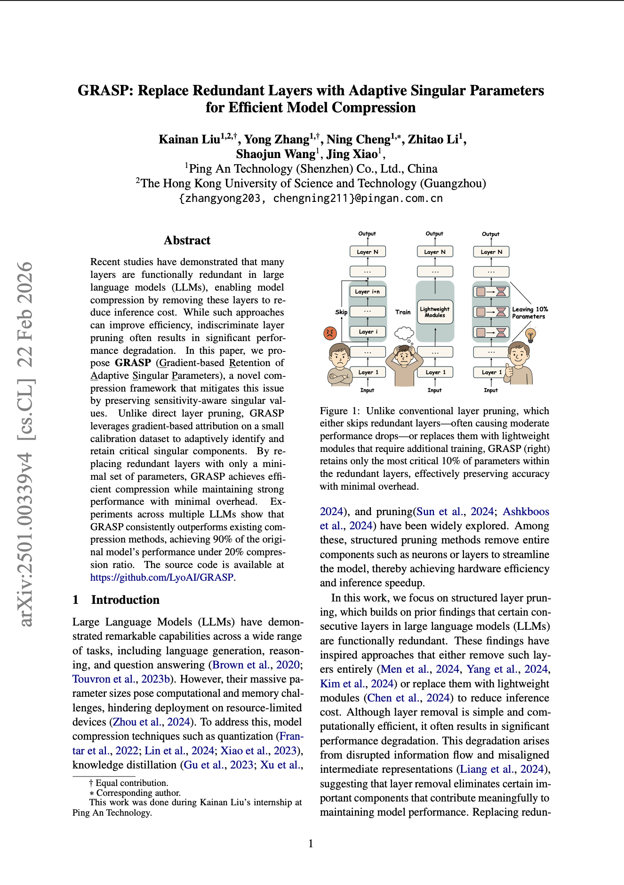
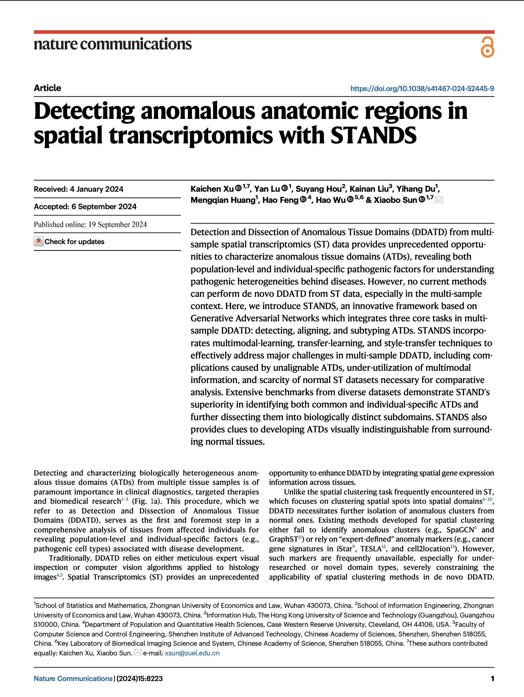

About
I am an AI Researcher and Engineer currently at Ping An Technology, where I focus on advancing the frontier of Large Language Models. My work is dedicated to optimizing AI efficiency and reliability, ensuring that complex models are both performant and deployable in practice.
I completed my M.Sc. in Data-Centric AI at HKUST (Guangzhou) 和 earned my B.Sc. in Data Science from Zhongnan University of Economics and Law (ZUEL).
Recent News
- Apr 2026 Paper "Astra: Activation-Space Tail-Eigenvector Low-Rank Adaptation of Large Language Models" accepted at ACL 2026 Findings.
- Mar 2026 Started a new position as AI Researcher & Engineer at Ping An Technology.
Selected Publications

ACL 2026 Findings
→
Astra: Activation-Space Tail-Eigenvector Low-Rank Adaptation of Large Language Models

EMNLP 2025 Main Conference
→
GRASP: Replace Redundant Layers with Adaptive Singular Parameters for Efficient Model Compression

Nature Communications
→
Detecting and dissecting anomalous anatomic regions in spatial transcriptomics with STANDS
* First author † Corresponding author